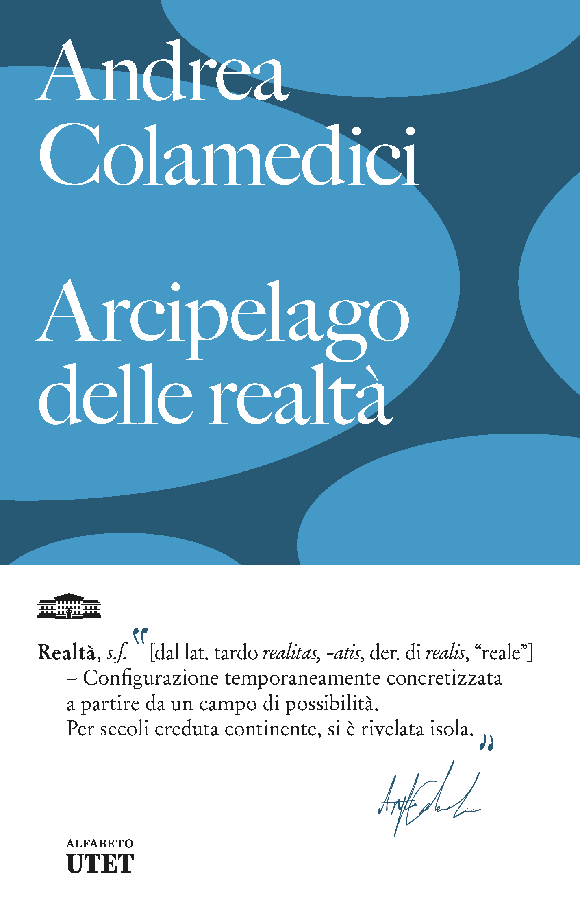

Andrea Colamedici
Realtà, s.f. [dal lat. tardo realitas, -atis, der. di realis, "reale"]
Configurazione temporaneamente concretizzata a partire da un campo di possibilità. Per secoli creduta continente, si è rivelata isola.
Preordina oraSe un tempo potevamo discutere su cosa fosse vero abitando lo stesso mondo, oggi la polarizzazione ha ceduto il passo alla frammentazione: abitiamo realtà diverse, costruite su misura da algoritmi che anticipano i nostri desideri ed eliminano ogni attrito.
Questo libro traccia la mappa della post-realtà, e propone un nuovo diritto: il diritto alla sorpresa.
Andrea Colamedici è filosofo, editore e scrittore. Insegna Prompt Thinking allo IED di Roma e alla 24ORE Business School, è presidente di GenIALab e direttore filosofico del Festival del Pensare Contemporaneo di Piacenza. Nel 2025 ha ideato l'esperimento filosofico di Jianwei Xun, autore di Hypnocracy (Sutherland House) e Prompt Thinking (Polity Press), scritti con sistemi di intelligenza artificiale.
Rassegna
"Hipnocracia, el libro del año"
El Clarín
"A.I. Can Trick You, Warns Book That Hid A.I.'s Help Writing It"
The New York Times
"Son concept d'hypnocratie entre dans notre réalité"
Le Monde
C'è una parte di ogni persona che non è ancora accaduta, e che smette di poter accadere nel momento in cui viene trattata come se fosse già nota.
La bambina generata ti sta già guardando.
Gli innesti cominciano qui.
Dieci innesti digitali verso il libro. Dall'11 al 24 marzo, un'isola alla volta.